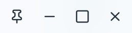
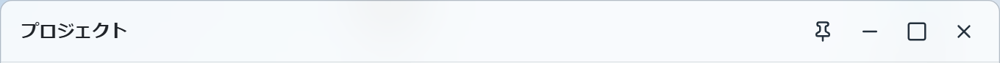
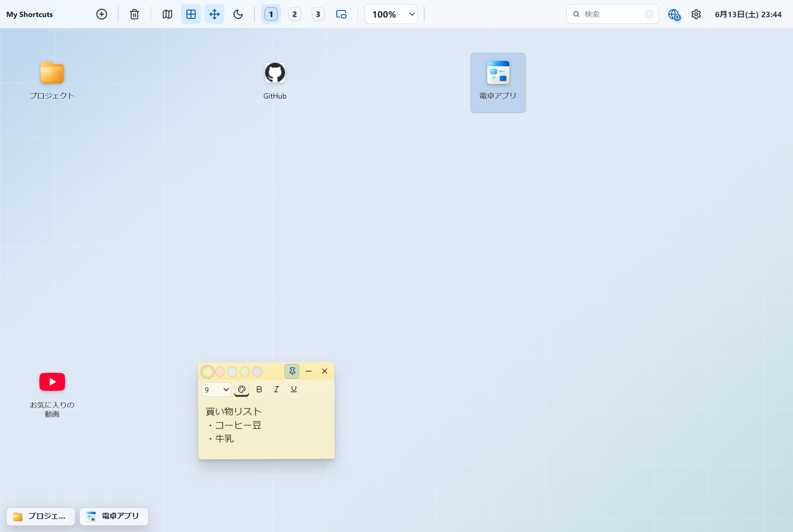
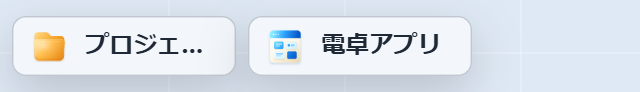
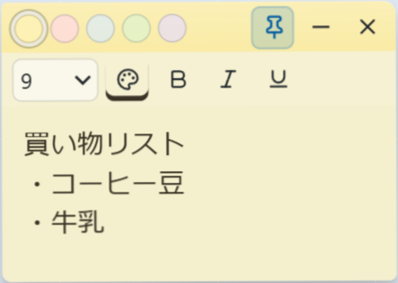

右クリックで、ぐっと近道。
アイコンや画面の上で右クリック。そのとき欲しい操作だけが、すっと出てきます。
何の上で押すかで、中身が変わる。
場面ごとに、そこで使える特徴的なものだけをまとめました。
※ コピー・切り取り・削除など、見ればわかる操作は省いています。
-
1
何もない所（デスクトップ）
画面の空いている所で右クリック。新しく置くものは、だいたいここから始まります。
開いているタブから追加クイックWeb検索 新規アプリ新規付箋 新規フォルダ新規Webショートカット「開いているタブから追加」を選ぶと、いま開いているタブが一覧で出てきて、選ぶだけで並べられます。
-
2
アプリのアイコン
自分でつくった小さなアプリの上で。中身に手を入れたり、持ち運んだり。
アプリ編集HTMLとしてエクスポート「アプリ編集」で中身を書き直し。「HTMLとしてエクスポート」で、1つのファイルとして書き出して持ち出せます。
-
3
Webショートカットのアイコン
お気に入りサイトのアイコンの上で。開き方を、その場で選べます。
デスクトップで開くタブで開く 別ウィンドウで開くURLをコピー「デスクトップで開く」は、画面を離れずにアプリ内の小さなウィンドウで。リンクのコピーも、ここからすぐに。

-
4
フォルダのアイコン
まとめたフォルダの上で。
開く（ウィンドウで開く）開くと、移動もサイズ変更もできるウィンドウに。アイコン表示か一覧表示かは、次に開いたときもちゃんと覚えています。中へドラッグして、あとから入れることもできます。
開いた画面は、思いのまま。
フォルダや動画、アプリのウィンドウ。タイトルの右にあるボタンで、しまったり、広げたり。
- 最小化 — いったんしまう
- 最大化 / 元に戻す — 画面いっぱいに、またもとの大きさに
- 閉じる — そのウィンドウを閉じる
- ピン留め — よく開くものを覚えておく

左から、ピン留め・最小化・最大化・閉じる。

実際のウィンドウでは、タイトルのとなりに並びます。
しまっても、すぐ戻せる。
最小化したウィンドウは、画面の左下に小さく並びます。クリックすれば、また同じ場所に開きます。開いたままの作業を、じゃまにならない所へ。

最小化したウィンドウは、画面の左下にまとまります。

クリックすれば、また同じ場所に開きます。
いつものものは、ピン留めしておく。
ピンを押しておくと、次に開いたときの手間が消えます。ウィンドウと付箋で、はたらきが少しちがいます。
- フォルダ・ショートカット・アプリ・動画・音楽 — 次にひらいたとき、自動でそのウィンドウが出てきます
- 付箋 — 画面をスクロールしても、その場から動きません。いつも見える所に。

色のついたピンが、ピン留め中の印。